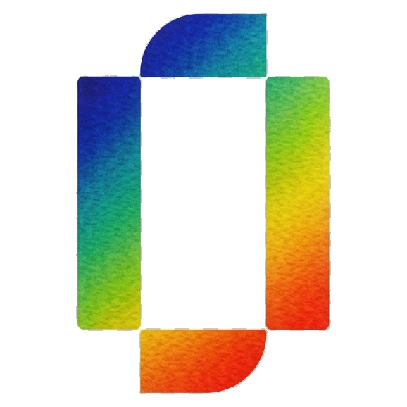
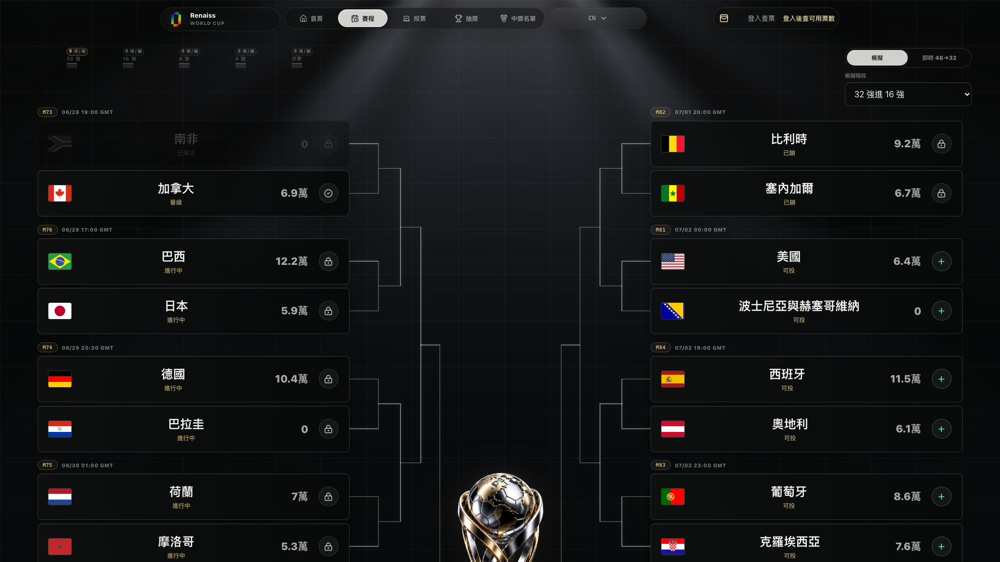
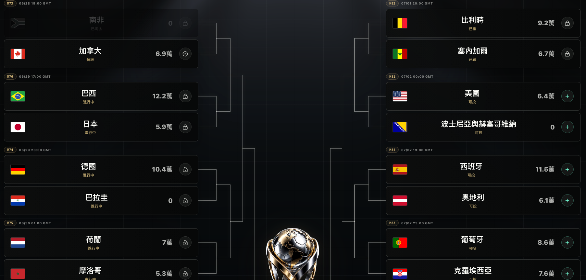
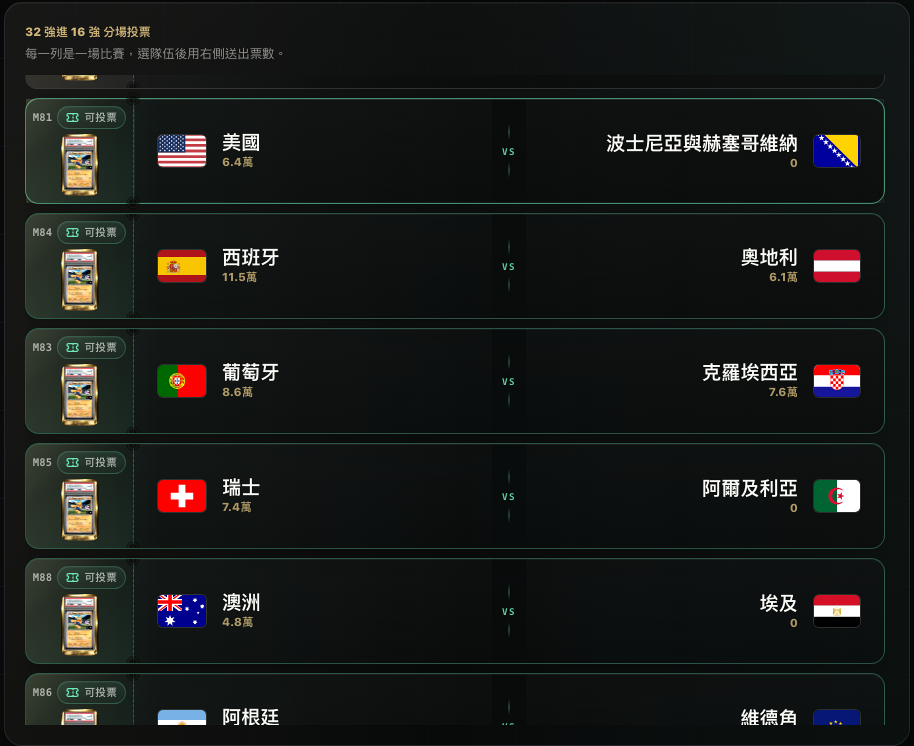
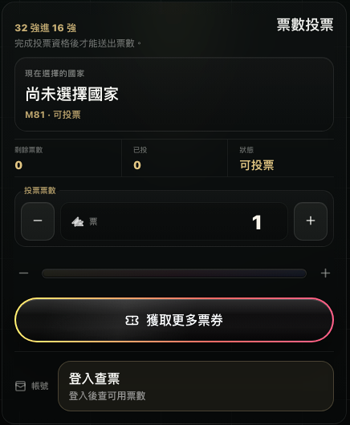
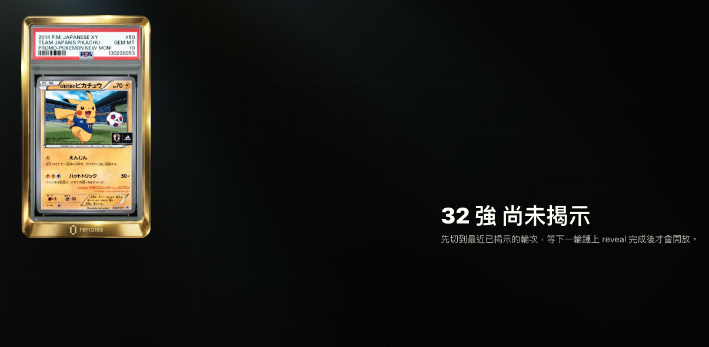
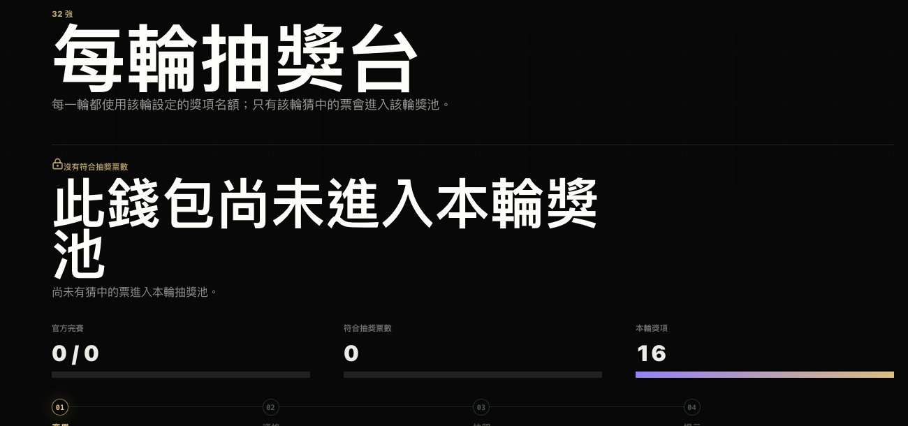
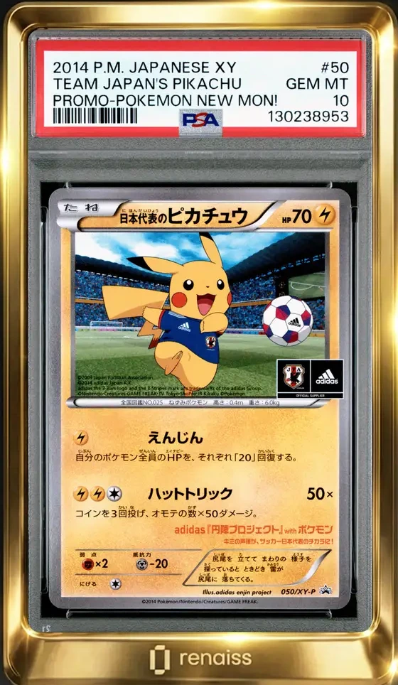
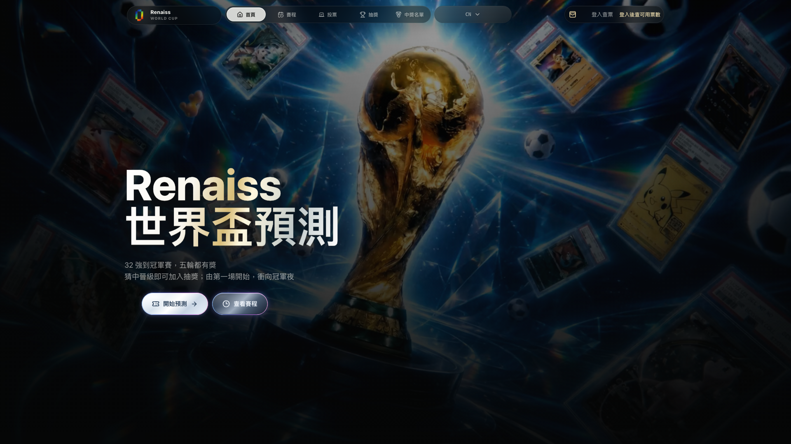

RenaissWorld Cup
Official Activity Promo
世界盃預測
世界盃預測
從投票到揭示
32 強到決賽，每一場預測都推向下一輪獎池與最後的大獎夜。
32強開局
5輪賽程
VRF揭示
1名大獎

Campaign Map
先看賽程
先看賽程
再決定票往哪裡走
活動不是單頁抽獎，而是一條從賽程、票數、截止時間一路走到決賽的預測路線。

32 強16 強8 強4 強決賽
Vote Flow
登入領票
登入領票
選比賽、選隊伍
右側票數面板決定投入 Tickets；送出後進入活動紀錄，等待官方賽果確認。


01挑比賽
02選晉級
03送票數

Eligibility & Prize
猜中才入池
猜中才入池
每輪獎池升級
賽果、資格與快照確認後，猜中的票才進入該場抽獎池。

32 強16 名US$1,500
決賽1 名US$2,500


Draw Desk
抽獎不是黑箱
抽獎不是黑箱
揭示才開名單
營運台跑完賽果、資格、快照與 VRF，完成後才打開 winner board。
賽果資格快照VRF名單

01
示意票號#R26-000428正式快照揭示後才對應得主
RenaissWorld Cup
預測、入池、
揭示得主
下一輪重新開始，每一次判斷都可能推向最後大獎。
Renaiss 世界盃預測，從 32 強一路跑到決賽。
先看賽程，再登入領票，選比賽、選晉級隊伍。
猜中才入池；賽果、資格、快照與 VRF 完成後才揭示。
每輪獎池升級，決賽收束成一名大獎得主。
揭示動畫播放後，Winner Board 打開。